Vincent van Gogh
The 150th Birth Anniversary
On 2 January 2003, TPG Post, the newly privatized postal service from The Netherlands, issued a sheet, FDC's and booklets in order to mark the 150th anniversary of the birth of Vincent van Gogh. Vincent was born in Groot-Zundert in the Netherlands on 30th March 1853 and became one of the greatest artists of the 19th century.
Largely on the basis of the works of the last three years of his life, van Gogh is generally held to have been the greatest Dutch painter after Rembrandt.
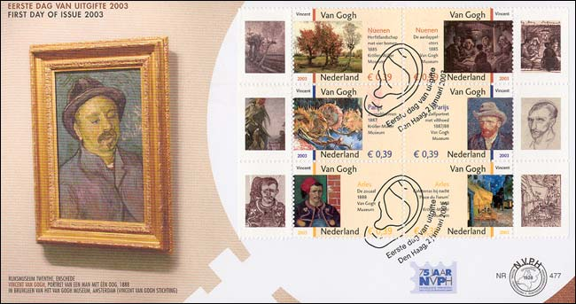
His work exerted a powerful influence on the development of much modern painting, in particular on the works of the Fauve painters, Chaim Soutine, and the German Expressionists. Yet of the more than 800 oil paintings and 700 drawings that constitute his life's work, he sold only one in his lifetime.
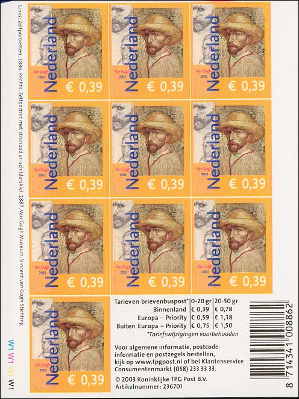
Always desperately poor, he was sustained by his faith in the urgency of what he had to communicate and by the generosity of Theo, who believed in him implicitly.
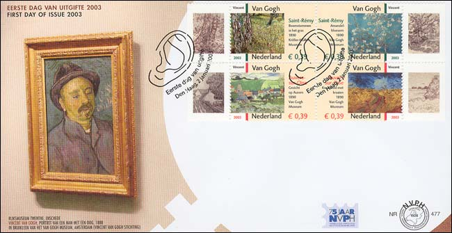
The letters that he wrote to Theo from 1872 onward, and to other friends, give such a vivid account of his aims and beliefs, his hopes and disappointments, his fluctuating physical and mental state that they form a unique and touching biographical record that is a great human document.
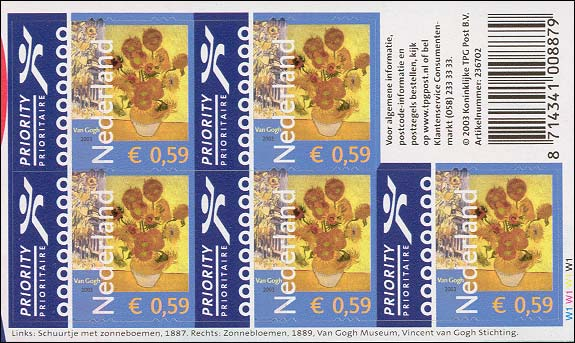
The Rijksmuseum Vincent van Gogh, containing over 1,000 paintings, sketches, and letters, was opened in Amsterdam in 1973. Six of the stamps shown on the sheet originated in this museum, the other four coming from the Kröller-Müller Museum.
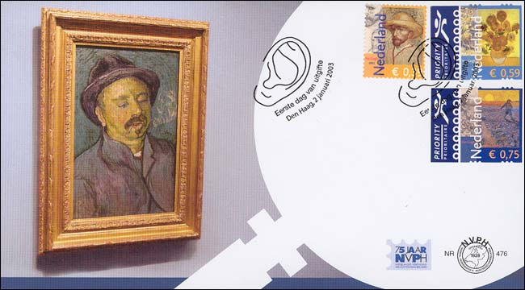
The designer Gracia Lebbink selected works created by Vincent van Gogh in
various different places. Alongside paintings, Van Gogh also produced many
drawings. The importance of these works is emphasized by combining a
painting and a drawing on each stamp.
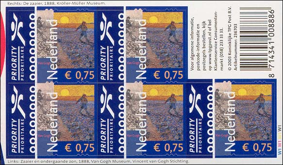
The stamp issue consists of a gummed sheetlet of 10 different stamps, a self-adhesive sheetlet of 10 identical stamps for use within the Netherlands, a self-adhesive sheetlet of 5 identical stamps for European mail and a self-adhesive sheetlet of 5 identical stamps for mail to destinations outside Europe.
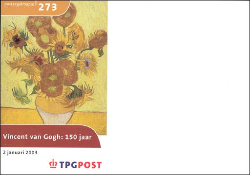
Finally a very interesting and varied issue, by which the country of Van Gogh's origin (and not an agency that works for 100 different countries), celebrates the 150th birth anniversary of one of its greatest painters. Such a pity that:
the name of the country, that serves as a separator, is so big and it isn't ideally placed.
the stamps appeared also in 50 stamps booklets (see below), a fact that wasn't made known by the TPG Post.
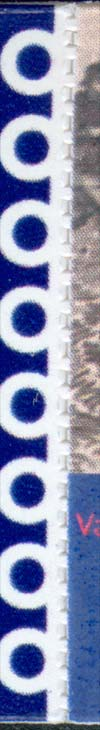 |
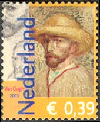 |
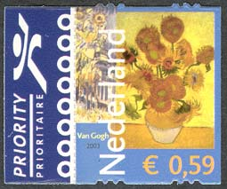 |
|
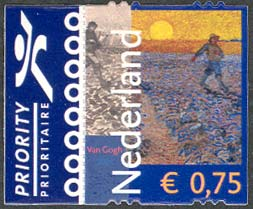 |
Please see above the stamps issued in booklets of 50 stamps. The difference can be seen at the vertical "perforations" of the € 0.59 and € 0.75 stamps, which is quite rude when compared with the perforation of the stamps issued in booklet of 5 stamps. On the left side I show magnified the perforations of the € 0.75 stamps. I don't provide a scan of the stamp issued in the booklet of 5 stamps, because they are so fine, that they don't clearly appear on the screen.
Note: Point on the stamps with the mouse index for more information.
Credits: To Rein Bakhuizen van der Brink, from The Netherlands, who sent me the above three stamps and who explained me the fine difference between the stamps originated in 5 and in 50 booklets. Thanks a lot Rein!!!
Links to other van Gogh pages on this site:
| Created
03/08/03. Revised:
03/30/03.
Copyright © 2003 by Victor Manta, Switzerland. All rights reserved in all countries. |
|